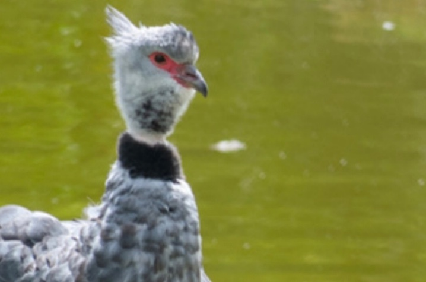
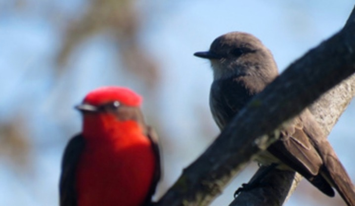

Cuaderno de Baqueano · En familia y en la escuela
Actividades sobre fauna autóctona del Uruguay
¿Cómo reconocés un ave si solo la ves un segundo? Probá estas tres actividades con gurises en el aula, en el patio o en la plaza. Podés arrancar con estas fotos, papel y lápiz.
1. Detectives de plumas
Miren las fotos del chajá y del churrinche. En parejas, anoten una diferencia y una semejanza entre las aves. Después, describan una de las fotos sin decir el nombre y pídanle al resto que la encuentre.


Para seguir investigando, mirá la ficha del chajá en Uruguay Educa y la ficha del churrinche de la Universidad Nacional del Litoral.
2. Un minuto de observación
Elijan un lugar donde puedan quedarse quietos un minuto. Miren y escuchen desde lejos. Anoten algo que puedan describir, como el color de un ala, la forma de moverse o un sonido. Si no saben qué animal fue, dejen el nombre como pregunta para investigar al volver.
Ficha de observación
- Fecha y lugar
- ¿Cuándo y dónde lo viste?
- Lo que vi u oí
- Dibujá o describí dos detalles.
- Lo que quiero averiguar
- ¿Qué pista te falta para reconocerlo?
Copiá la ficha en el cuaderno y usá una por cada hallazgo.
3. Armá una figurita de pistas
Elegí un animal que hayas visto o encontrado en el álbum. Dibujalo en una tarjeta y escribí tres pistas al dorso: cómo es, en qué ambiente vive y qué comportamiento lo distingue. Si una pista todavía es una suposición, dejala como pregunta. Intercambien las tarjetas y jueguen a identificar los animales antes de mirar el dibujo.
Conocé el álbum Baqueano